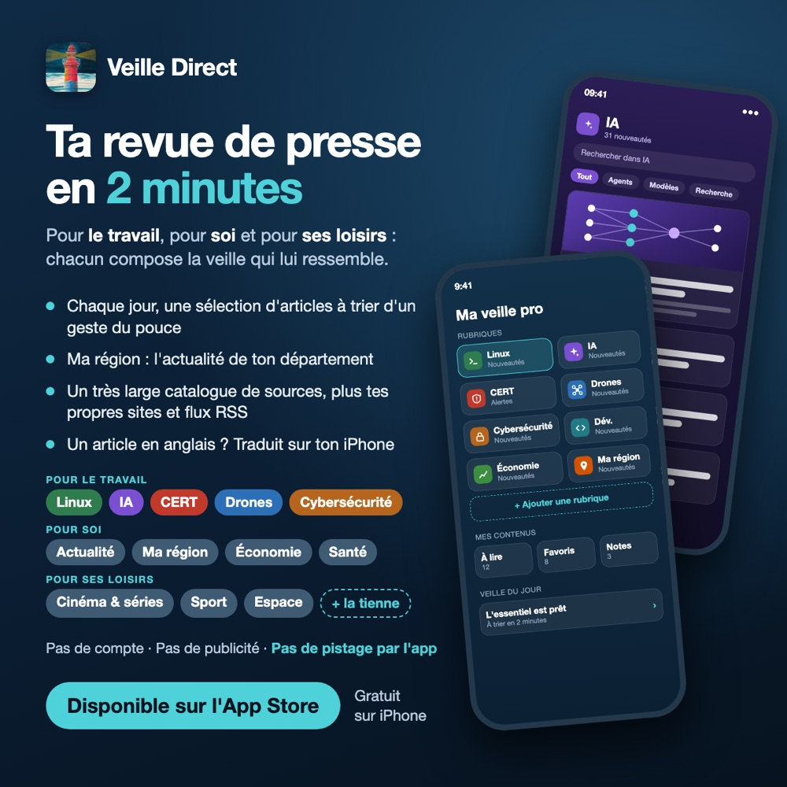
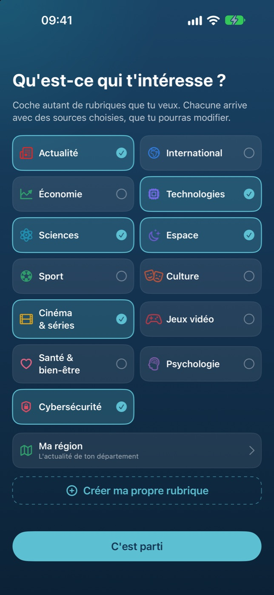
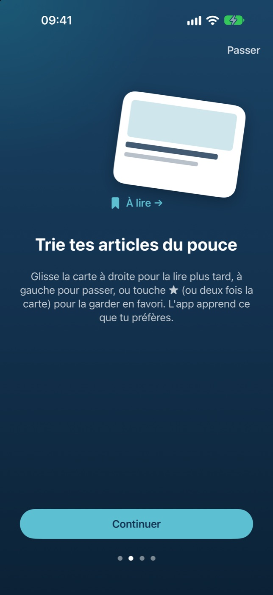
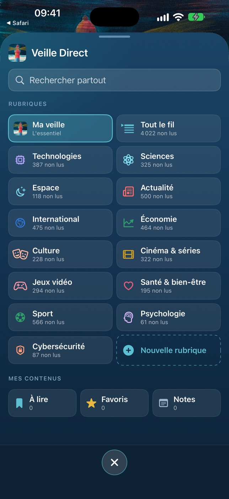

App iPhone gratuite
Tes sites d’info réunis dans une seule app. Chaque jour, L’essentiel te propose une sélection d’articles à trier d’un geste du pouce.
Télécharger surl’App Store Gratuite · iPhone et iPad · iOS 26 ou plus récent
Comment ça marche
Choisis tes rubriques, laisse l’app rassembler les articles, puis trie-les du pouce. C’est tout.

Actualité, sciences, sport, cinéma… ou crée les tiennes.

À droite à lire, à gauche on passe, deux touchers pour les favoris.

Tes rubriques, tes favoris et tes notes, toujours sous la main.
Les fonctions
Une app pensée pour l’iPhone, qu’on utilise d’une seule main.
Une sélection d’articles de tes rubriques, en cartes à trier. L’app apprend de tes choix.
Actualité, Technologies, Sciences, Sport, Culture… avec des filtres par mot pour ne garder que ce qui t’intéresse.
L’actualité de ton département, presse locale comprise. L’app ne te demande jamais ta position.
Une expression exacte entre guillemets, dans tous tes articles, puis affine par rubrique, source ou période.
Un article en anglais ? Appui long, « Traduire en français ». C’est fait sur ton iPhone, rien n’est envoyé ailleurs.
Depuis Safari ou n’importe quelle app : Partager, puis Veille Direct. Le lien t’attend dans « À lire ».
De la presse nationale aux médias locaux, plus tes propres sites ou flux RSS, des chaînes YouTube et des comptes Bluesky ou Mastodon.
Les articles s’ouvrent en mode Lecture quand le site le permet. Tu préfères ton navigateur ? C’est un réglage.
Les nouveautés sur l’écran d’accueil, le mode sombre et la taille du texte à ton goût.
Pour qui
Suivre son secteur, ses concurrents ou les nouveautés de son métier.
Garder un œil sur l’actualité, sa région et sa santé.
Tout ce qui te passionne, au même endroit.
Vie privée
Questions fréquentes
Oui. Pas d’abonnement, pas d’achat dans l’app, pas de publicité.
Sur iPad, oui : l’app s’affiche comme sur iPhone, en plus grand, avec les mêmes gestes. Sur Mac, pas encore.
Pas pour l’instant : Veille Direct est une app iPhone.
Oui : Réglages, puis Mes sources. Tu peux ajouter un site, un flux RSS, une chaîne YouTube ou un compte Bluesky ou Mastodon. Tu peux aussi importer un fichier OPML depuis un autre lecteur.
Depuis l’app, dans Mes sources, ou par e-mail à veilledirect@icloud.com.
Non : tes favoris, tes notes, tes rubriques et tes réglages passent par ton propre iCloud et reviennent sur ton nouvel iPhone.
C’est un projet personnel, mené sur mon temps libre. Veille Direct n’a aucun lien avec les journaux proposés : elle montre ce qu’ils publient eux-mêmes, sans rien contourner.
Gratuite sur l’App Store, pour iPhone et iPad.
Télécharger surl’App Store